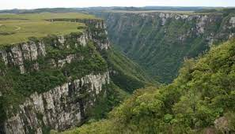

Trabalho de Geografia - Relevo da América Latina
No Brasil, há um vasto planalto que abrange grande parte do país. É uma região de terreno relativamente plano e ondulado, com altitudes variadas. Essa área é caracterizada por sua rica biodiversidade e diversos ecossistemas.
Os planaltos são terrenos mais antigos relativamente planos, situados em altitudes mais elevadas. Destacam-se o Planalto Central Brasileiro, Centro Sul de Minas, Planalto da Amazônia Oriental e os planaltos da Bacia do Parnaíba e da Bacia do Paraná.
_____